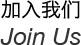

兕维信息科技是一家创业型的企业，从事互联网、手机终端的网站开发，我们正在招募成员。
期待您能加入我们，为我们的用户奉上从视觉效果到代码实现都赏心悦目的作品！
如果你对未来充满了激情，如果你怀揣梦想，请加入我们！可以通过电话或者电邮联系到我们：
期待您能加入我们，为我们的用户奉上从视觉效果到代码实现都赏心悦目的作品！
如果你对未来充满了激情，如果你怀揣梦想，请加入我们！可以通过电话或者电邮联系到我们：
-
【工作职责】
负责网站的后台程序编写
【职位要求】
1、熟悉Ruby或PHP语言，熟悉Rails框架以及MySQL
2、熟悉Web相关技术：HTTP协议、JQuery、Ajax、HTMLl、CSS等
3、有使用git等协同开发工具的经验
4、能在Linux 或者 Mac 下熟练工作
5、具备良好的团队合作精神，良好的沟通能力，能承受工作压力
另：如果你对Rails感兴趣，但是没有使用Rails的经验，我们也可提供Rails的培训机会
【工作地点】上海徐汇区茶陵北路
-
【工作职责】
1、负责手机（iOS，Android， WM，etc.)用户界面的美术设计、创意工作和制作工作
2、根据各种应用程序的用户群，提出构思新颖、有高度吸引力的创意设计
3、对画面进行优化，使用户操作更趋于人性化
4、收集和分析用户对用户界面的需求，并不断完善产品的界面设计
5、参与产品后期运营维护，如EDM等的制作
【职位要求】
1、艺术设计或相关专业本科及以上学历，3年（含）以上相关工作经验
2、有丰富的设计理论知识和对流行趋势敏锐的洞察力，对软件（特别是移动平台应用程序）UI设计趋势有灵敏触觉和领悟能力
3、对视觉用户研究有一定经验和见解，具有界面风格设定以及VI设定（包括界面、图标风格与统一规范等）经验，有手机客户端的设计经验，并了解手机应用软件、手机游戏的设计规范者尤佳
4、熟练掌握Photoshop、Illustrator、Flash等常用平面及动画设计软件
5、对矢量图输出和像素化细节图形有深刻理解
6、具有良好的团队合作意识，沟通良好责任心强，能够承担一定的工作压力
7、具备良好的职业素养和团队协作精神，以及较强的学习和交流能力
8、简历请附作品（须有网页或软件界面设计作品，有平面设计、2D/3D、手机用户界面设计、Icon或手绘等设计作品更好）
【工作地点】上海徐汇区茶陵北路
-
【工作职责】
1、参与开发具有良好性能、良好用户体验的 iOS 应用程序
2、能很好的完成设计、制定开发计划、开发并部署等任务
【职位要求】
1、丰富的Apple产品使用经验，熟悉Apple应用程序的设计理念
2、掌握Objective-C语言开发，熟练运用XCode，Interface Builder 等工具
3、熟悉iPhone SDK
4、具备良好的专业英文资料阅读能力
5、熟悉HTML5，JS 或者 Opencv者优先
6、熟悉Android开发尤佳
7、良好的沟通能力和团队协作精神
【工作地点】上海徐汇区茶陵北路

-
【工作职责】
负责新项目的设计和开发。
【职位要求】
1、1年以上相关工作经验
2、熟悉OOP开发
3、熟悉HTML，CSS，Javascript
4、熟悉LAMP(Apache或者Nginx)
5、熟悉常用shell命令
6、熟悉MySQL，了解常用优化策略
【工作地点】上海徐汇区茶陵北路
-
【工作职责】
主要负责Android平台手机客户端的开发和维护工作
【职位要求】
1、熟悉Android UI
2、精通Java语言，能够熟练使用Java语言及相关工具进行客户端应用程序开发，有一年以上Java或者Android开发经验
3、掌握面向对象设计的基本原理，熟悉设计模式
4、熟悉Android应用开发平台，有Android实际开发经验者优先；熟悉Android NDK开发者优先
5、熟练掌握C/C++语言优先，具备多媒体开发经验、网络程序开发经验、Web开发经验者优先
【工作地点】上海徐汇区茶陵北路
-
【工作职责】
1、积极寻求改进我们网站的各种可能的思路和方案
2、对我们网站在用户浏览器端的最终视觉呈现负责
3、使用HTML/CSS/Javascript开发符合W3C标准的网站前端页面
4、持续的优化前端体验和页面响应速度
5、和后台工程师一起研讨技术实现方案，制定服务接口等
6、积极探索并总结美团网前端开发模式和规范
【职位要求】
1、本科以上学历，习惯阅读英文原版技术文档和书籍
2、对可用性、可访问性等相关知识有深刻的认识和实践经验
3、精通XHTML/CSS/Javascript等前端技术，习惯于手写符合W3C标准、兼容多种浏览器的代码
4、熟悉至少一种JS框架（如JQuery/Prototype等），我们目前主要使用JQuery
5、掌握至少一门非前端脚本开发语言（如PHP/Python等），并有一定的
实战经验
6、苹果重度用户或Linux爱好者优先
7、有个人独立作品或开源作品者优先
8、有个人技术博客或在各技术社区活跃者优先
【工作地点】上海徐汇区茶陵北路
-
【工作职责】
1、协助项目负责人（Project Owner）搜集、整理项目资料（英文为主）
2、负责编辑与整理工作
3、协助PO与上下游供应商的沟通与联络工作
4、参与项目进展的日常会议，并贡献个人观点与意见
5、与目标用户协调沟通，充分了解并反馈用户意见与建议 -
【职位要求】
1、熟练掌握英语（阅读能力达到四六级水平或者以上），掌握法语或其他欧洲语系者优先
2、数量掌握办公软件的使用技巧，熟悉苹果操作系统与iWorks软件者优先
3、品格优秀，正直诚实 -
- 【工作地点】上海徐汇区茶陵北路
-
【工作职责】
1、参与开发具有良好性能、良好用户体验的 Android 应用程序
2、能很好的完成设计、制定开发计划、开发并部署等任务
【职位要求】
1、有丰富的Java开发经验
2、较丰富的Android产品使用经验，具备丰富的 Android 开发经验
3、具备良好的专业英文资料阅读能力
4、熟悉HTML5，JS，或Opencv者优先
5、有ios开发经验更好
6、良好的沟通能力和团队协作精神
【工作地点】上海徐汇区茶陵北路
-
【工作职责】
负责项目所属网站的整体风格、视觉表现、使用性能等工作，能以统一风格来实现全站的设计制作。
【工作内容】
1、 设计制作网站，保持网站的良好视觉效果及其易用性
2、 能够草拟网站架构与示意图稿
3、 使用HTML/Java/CSS/Flash/HTML5等建构网站
4、测试并改进网站在不同浏览器上的兼容性与易用性等
5、 完成网站的上传与维护等工作
6、 设计制作发布网站相关的其他设计作品（如EDM等）
7、 设计制作网站推广的内部与外部文件等
【职位要求】
1、大专以上学历，有过设计相关培训，专业美术、设计院校毕业者优先
2、具备良好美术功底、在创意上有独特的见解
3、 二年以上网站互动设计经验或互动设计公司相关工作经验
4、精通Dreamweaver、Illustrator、Flash、Photoshop等软件
5、精通HTML、Javascript、CSS等网页制作技术
6、善于协作与沟通，具备良好的团队合作精神
7、有大型网站互动创意、用户体验设计经验者优先简历请附作品（网页及平面设计作品）
【工作地点】上海徐汇区茶陵北路